Chapter 6 Analysis protocol
6.1 Read mapping and UMI counts
As discussed in section 5.2, de-multiplexing, alignment to the GRCh38 transcriptome and unique molecular identifier (UMI)-collapsing were performed using cellCounts. Here we load the saved counts R object.
load("counts.RData")
names(counts)## [1] "counts" "cell.confidence" "annotation" "sample.info"The information below provides a summary of the quantification stats returned by cellCounts.
counts$sample.info## SampleName TotalCells HighConfidenceCells RescuedCells TotalUMI MinUMI
## 7 LLU_A_Seq1 2954 2691 263 59485648 506
## 12 LLU_B_Seq1 1451 1305 146 33887743 504
## MedianUMI MaxUMI MeanUMI TotalReads MappedReads AssignedReads
## 7 18718 91172 20137.32 132228861 106079174 83649022
## 12 22124 99487 23354.75 134624084 105735336 78858247#rename sample nameIn addition, the sample information discussed in 3.1 is loaded as shown by the details below.
sample.info <- read.csv("sample_info.csv",stringsAsFactors = F)
sample.info## Library.Name cell_line Sample.Name sex
## 1 LLU_A_Seq1 breast cancer cell line (HCC1395) HCC1395 female
## 2 LLU_B_Seq1 normal B lymphocyte cell line (HCC1395BL) HCC1395BL female
## tissue
## 1 breast
## 2 bloodThe counts are transformed to a Seurat object using the CreateSeuratObject function. Entrez gene IDs are also converted to their corresponding gene symbols.
#load Seurat package
library(Seurat)
#load annotation package
library(org.Hs.eg.db)
#Generate a list mapping gene Ids to symbols
ID2symbol.lst<-as.list(org.Hs.egSYMBOL)
head(rownames(counts$counts$LLU_A_Seq1))## [1] "100287102" "653635" "102466751" "100302278" "645520" "79501"#Get list of Mitochondrial genes to be used for calculating percentage
#of UMIs assigned to Mitochondrial genes in each cell
genes.MT <- unlist(ID2symbol.lst[as.list(revmap(org.Hs.egCHR))$MT],
use.names = F)#Create list of Seurat objects
counts_st <- sapply(counts$sample.info$SampleName, function(x) {
x.sample <- sample.info[sample.info$Library.Name == x,]
#get counts from cellCounts
x.counts <- counts$counts[[x]]
#Change gene IDs to symbols
x.genes <- ID2symbol.lst[rownames(x.counts)]
rownames(x.counts)[rownames(x.counts) %in% names(ID2symbol.lst)] <-
unlist(ID2symbol.lst[rownames(x.counts)], use.names = F)
#create Seurat object
x.counts <- CreateSeuratObject(x.counts,
min.cells = 0)
#Calculate percentage of UMIs assigned to Mitochondrial genes in each Cell
x.counts[["percent.MT"]] <-
PercentageFeatureSet(x.counts, features = genes.MT)
#Calculate percentage of UMIs assigned to Ribosomal genes in each Cell
x.counts[["percent.Ribo"]] <-
PercentageFeatureSet(x.counts, pattern = "^RP[SL]")
#Add Sample metadata
x.counts[["cell.line"]] <- x.sample$cell_line
x.counts[["tissue"]] <- x.sample$tissue
x.counts[["Sample"]] <- x.sample$Sample.Name
return(x.counts)
}, simplify = F)
#Merge Seurat objects
counts_st <- merge(
counts_st$LLU_A_Seq1,
counts_st$LLU_B_Seq1,
add.cell.ids = counts$sample.info$SampleName,
merge.data = TRUE
)
counts_st## An object of class Seurat
## 28395 features across 4405 samples within 1 assay
## Active assay: RNA (28395 features, 0 variable features)6.2 Quality control checks
6.2.1 Mitochondria content
We first look at the distribution of the Mitochondrial content to decide on the cut-off for filtering. The histogram below shows the distribution of the percentage of mitochondria content across all cells.
samples <- unique(counts_st@meta.data$Sample)
hist(
counts_st@meta.data$percent.MT,
main = "Mitochondria content across all samples",
cex.main = 1,
cex.lab = 0.8,
xlab = "Percentage"
)
Figure 6.1: Percentage of mitochondria
par(mfrow = c(1,2), oma = c(0, 0, 4, 0))
for (s in samples)
{
hist(
subset(counts_st@meta.data, subset = Sample == s)$percent.MT,
main = paste0(s),
xlab = "Percentage",
cex.main = 1,
cex.lab = 0.9,
cex.axis = 0.8
)
}
title(main = "Mitochondria content",
cex.main = 1,
outer = T)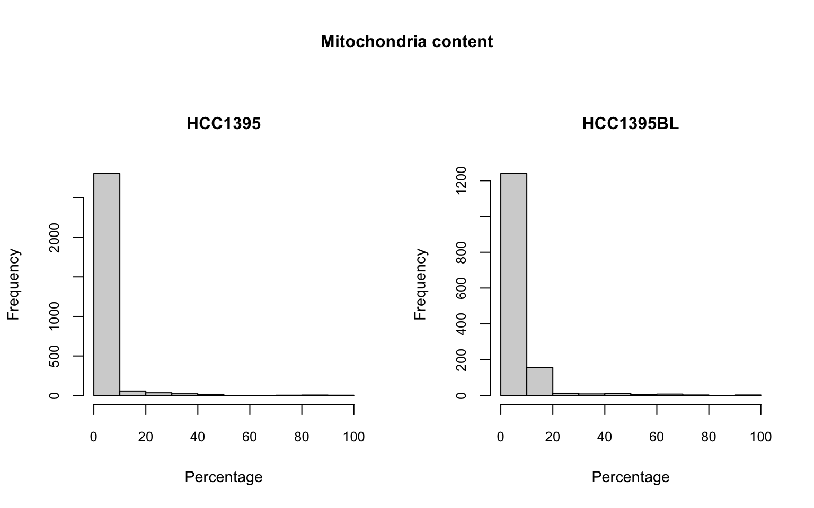
6.2.2 Ribosomal content
The histograms below show the distribution of the Ribosomal content across all samples.
hist(
counts_st@meta.data$percent.Ribo,
xlab = "Percentage",
cex.main = 1,
main = "Ribosomal content across all samples",
cex.lab = 0.8
)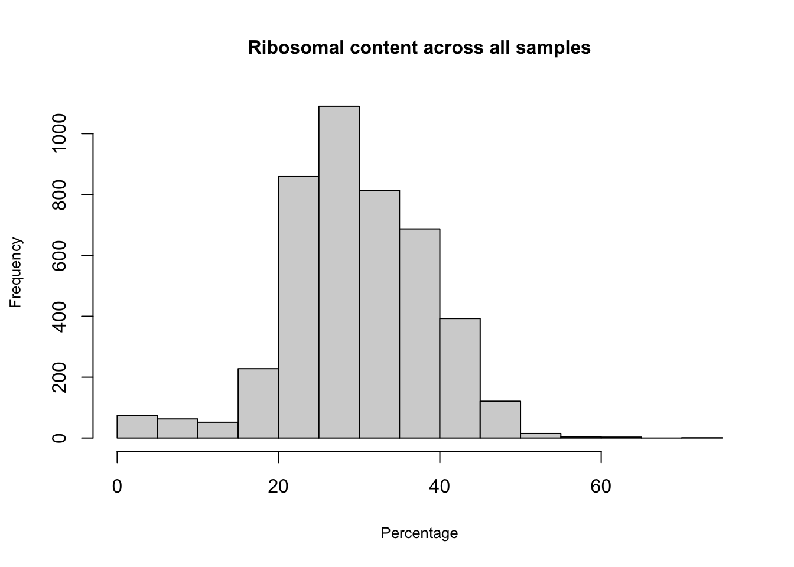
par(mfrow = c(1, 2), oma = c(0, 0, 4, 0))
for (s in samples)
{
hist(
subset(counts_st@meta.data, subset = Sample == s)$percent.Ribo,
main = s,
xlab = "Percentage",
cex.main = 1,
cex.lab = 0.9,
cex.axis = 0.8
)
}
title(main = "Ribosomal content",
cex.main = 1,
outer = T)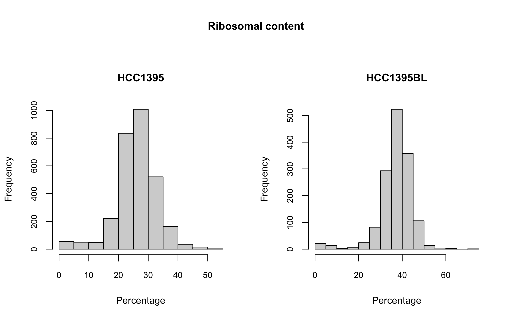
6.2.3 Number of detected genes
The histogram plot below shows the distribution of the number of detected genes across cells from all samples.
hist(
counts_st@meta.data$nFeature_RNA,
main = "Number of detected genes ",
xlab = "Genes per cell",
cex.main = 1,
cex.axis = 0.9,
cex.lab = 0.8
)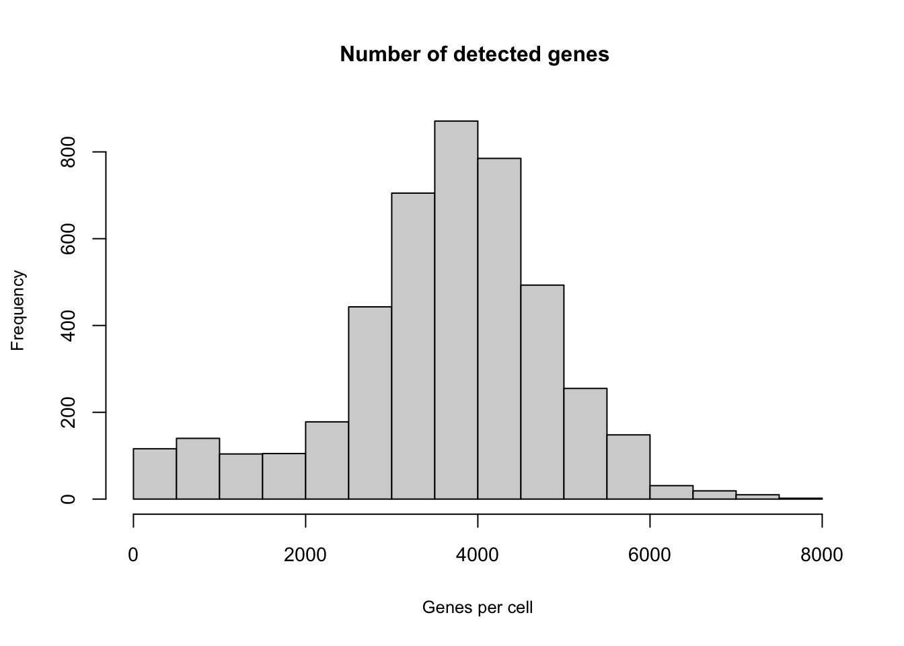
par(mfrow = c(1, 2), oma = c(0, 0, 4, 0))
for (s in samples)
{
hist(
subset(counts_st@meta.data, subset = Sample == s)$nFeature_RNA,
main = s,
xlab = "Detected genes",
cex.main = 1,
cex.lab = 0.9,
cex.axis = 0.8
)
}
title(main = "Number of detected genes",
outer = T,
cex.main = 1)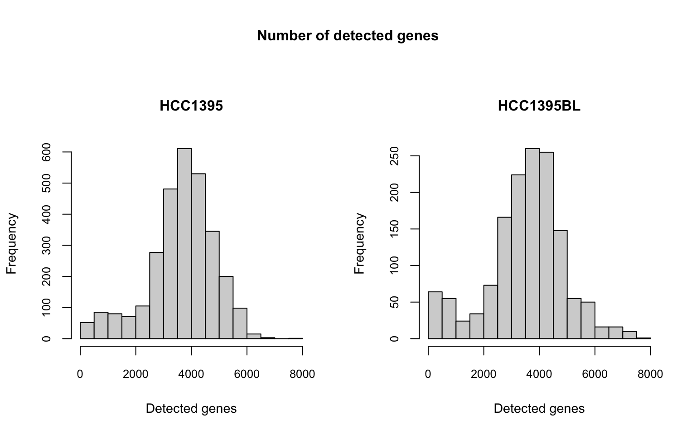
6.3 Filtering
6.3.1 Cell filtering
#Filters used
min.exp_genes<-200 #minimum number of detected genes in each cell
max.exp_genes<-6000 #Maximum number of detected genes in each cell
percent.mito <- 20 #Percentage of mitochondrial content
percent.ribos <- 40 # Max percentage of Ribosomal contentBased on the quality control checks above, the following filters are used to exclude cells that did not meet the criteria from the rest of the analysis
Number of cells before filtering for mitochondrial and ribosomal content: 4,405
#exclude cells with a high content of mitochondrial and ribosomal content
counts_st <-subset(counts_st, subset = percent.MT < percent.mito &
percent.Ribo < percent.ribos)Number of cells after filtering for mitochondria and ribosomal content: 3,731 Next we exclude cells that had less than 200 and greater than 6,000
Number of cells remaining after filtering for cells with low number of detected genes: 3,678 Number of cells left per sample
HCC1395 HCC1395BL 2794 884
6.3.2 Gene filtering
Genes that failed to express (an expressed gene has at least 1 UMI count) in at least 3 cells in at least 1 sample together with Mitochondrial and Ribosomal genes are excluded from the rest of the analysis;
Number of genes before filter: 28,395
#Check genes expressed in at least 3 cells in at least one of the samples
keep.genes <- rowSums(do.call(cbind, lapply(samples, function(x)
rowSums(as.matrix(
subset(counts_st, Sample == x)@assays$RNA@counts
) > 0) >= 3)))>0
table(keep.genes)## keep.genes
## FALSE TRUE
## 10516 17879counts_st <- counts_st[keep.genes, ]##
## Number of genes after filtering for genes that failed to express in at least 3 cells in at least 1 sample: 17,879Mitochondrial and Ribosomal genes are also excluded from the rest of the analysis.
#filter ribosomal and mitochondrial genes
counts_st <-
counts_st[!(rownames(counts_st) %in% genes.MT) &
!grepl("^RP[SL]", rownames(counts_st)),]Number of genes after filtering for mitochondrial and ribosomal genes: 17,712
6.4 Normalization
After removing unwanted cells from the dataset, the data was normalized using a global-scaling normalization method “LogNormalize” that normalizes the feature expression measurements for each cell by the total expression, multiplies this by a scale factor (10,000 by default), and log-transforms the result.
counts_st <-NormalizeData(
object = counts_st,
normalization.method = "LogNormalize",
scale.factor = 10000
)6.5 Dimension reduction and clustering
A subset of highly variable genes between cells were calculated using FindVariableFeatures function within Seurat.
#Identification of highly variable features (feature selection)
counts_st <- FindVariableFeatures(object = counts_st )The scatter plot below shows the top 10 identified variable genes and their average expression against variance
# Identify the 10 most highly variable genes
top10 <- head(VariableFeatures(counts_st), 10)
# plot variable features with labels
plot1 <- VariableFeaturePlot(counts_st)
plot2 <- LabelPoints(plot = plot1, points = top10, repel = TRUE)## When using repel, set xnudge and ynudge to 0 for optimal resultsplot2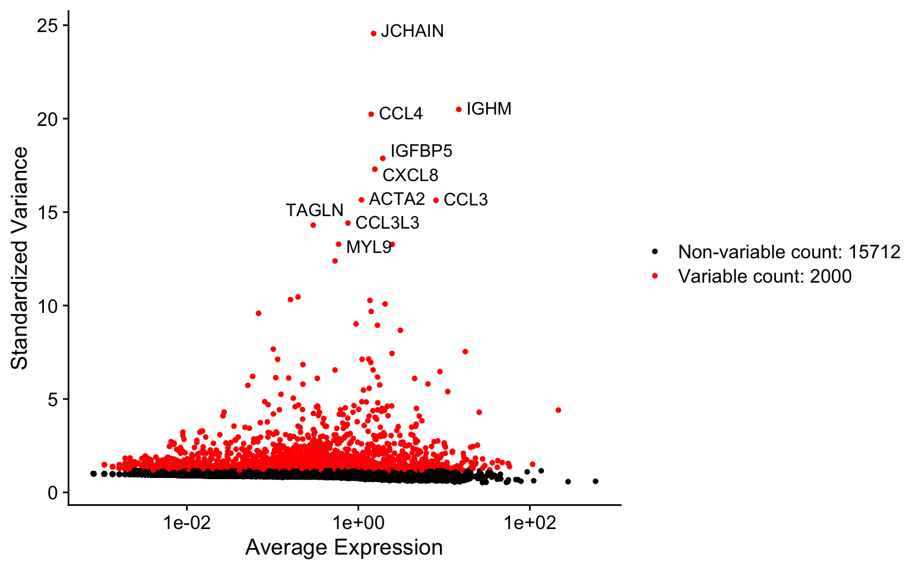
A linear transformation (‘scaling’) was applied to the normalized data prior to dimensional reduction techniques using the ScaleData function in Seurat.
counts_st <- ScaleData(
object = counts_st,
features = rownames(counts_st),
verbose = F)Principal component analysis was performed using the variable genes identified above.
counts_st <-RunPCA(
counts_st,
features = VariableFeatures(object = counts_st))## PC_ 1
## Positive: S100A6, S100A10, TNFRSF12A, TSPO, TPM2, CAV1, TPM1, CALD1, ANXA2, RHEB
## ITGB1, LARP6, NQO1, HSBP1, SERPINE2, MGST1, FTH1P3, HSPB1, CYP1B1, KRT81
## DEF8, TSC22D1, LY6K, TNNT1, TGFBI, CAV2, CALU, DSTN, CCND1, TUBB3
## Negative: CD74, HLA-DRA, MS4A1, HLA-DPA1, LAPTM5, ARHGDIB, HLA-DPB1, IGHM, LSP1, LIMD2
## MIR155HG, CD70, CCND2, PDLIM1, CORO1A, BST2, CD79A, SNCA, CCL3, CD48
## RAC2, SRGN, TMSB4X, IGLC2, PLEK, CCR7, HCLS1, TNFRSF13B, CD53, IRF4
## PC_ 2
## Positive: NME7, NDRG1, GADD45A, WIPI1, YPEL5, H2BC12, LURAP1L, GABARAPL1, GDF5, ZNF667-AS1
## ULK4, MYLK, KRT16, CCN1, FN1, LINC01315, NUPR1, BEX2, DNAJB9, PLK2
## SGK1, KRT75, CCN2, FBLIM1, MYC, MAP1LC3B, SELENOM, LINC01133, DUSP10, IL1RL1
## Negative: MKI67, CENPF, PLK1, HMGB2, CDC20, AURKA, CDCA3, UBE2C, CENPA, CCNA2
## GTSE1, HMMR, PTTG1, TPX2, NUSAP1, SMC4, TOP2A, CKS2, CENPE, CCNB1
## CDKN3, BIRC5, PRC1, CCNB2, ARL6IP1, DEPDC1, SGO2, ASPM, UBE2S, KPNA2
## PC_ 3
## Positive: GADD45A, MARCKSL1, LAPTM4A, FDPS, ATP6V0B, PSMD8, PSMC2, HLA-C, PRMT1, TAGLN2
## CD44, TMBIM6, PAK1IP1, LGMN, DNAJA1, UBB, XRCC6, ENO1, TIMP1, RIPK2
## HACD3, DCAF13, UBC, TXNL1, HCCS, ADH5, CCT4, RTCB, DNAJB6, PGK1
## Negative: ULK4, ASPM, MKI67, C1orf56, CENPF, JCHAIN, TOP2A, GTSE1, NUSAP1, MXD3
## HMGB2, CDKN3, KIF14, CENPA, IGLL1, HMMR, IGLC7, BIRC5, PHKG1, IGLC5
## ITGA4, PRDM1, CENPE, CKAP2, TPX2, PRR11, DLGAP5, CDCA3, PIF1, IGLL5
## PC_ 4
## Positive: ZFP36L1, DEK, BASP1, H4C3, STAG3, C12orf75, CCL22, SCG5, SERTAD4-AS1, CD82
## ATAD2, TNFSF4, CENPX, PRRX1, ARL4C, HCFC1R1, TNFAIP3, RAC3, FAM20C, DUSP4
## GTSE1, FTH1P3, ANKRD33B, SOX4, MARCKSL1, TNNT1, ANKRD11, PRR11, SMIM14, RUNX3
## Negative: UBB, PRDX1, PGK1, PSMA4, ENO1, PSMA3, EIF4A3, TMBIM6, ERP44, JCHAIN
## DCAF13, NPM1, CCT8, XRCC6, PSME2, IGLL1, IGLC7, IGLC5, MDH1, HSPA5
## HSPD1, HSP90AB1, CCT4, CCT5, HSP90B1, PSMC2, UBC, IGLL5, PRMT1, DNAJB11
## PC_ 5
## Positive: C12orf75, JCHAIN, IGLC7, IGLL1, IGLC5, IGLL5, FN1, FTL, ITGA4, SPHK1
## PRDM1, TNFRSF17, GLCCI1, SSR3, IGLL3P, RASSF6, GUSBP11, LINC01480, CLEC2B, ST6GAL1
## GLIPR1, ISG15, XBP1, POU2AF1, FAM107B, SDF2L1, RRAGD, CCDC69, MEF2C, CYTOR
## Negative: MMP7, LTA, AKR1C2, WDR91, BCL2A1, CCL22, AKR1C1, PRDX1, ENO1, SSTR2
## HSP90AB1, LDHA, AKR1C3, TRAF1, TNFRSF8, STAG3, PKM, HSPD1, EBI3, AKR1B10
## MUC12-AS1, LINC00158, ICAM1, HSP90AA1, ZBTB32, RHOV, AKR1C4, NFKBIA, CCT5, BCAT1We use the JackStraw function in Seurat to establish the dimensionality of the dataset. This is done by randomly selecting a subset of genes and their significance in a computed PC.
counts_st <- JackStraw(counts_st, verbose = F, dims = 20)
counts_st <-
ScoreJackStraw(counts_st, reduction = "pca", dims = 1:20)JackStrawPlot(counts_st, reduction = "pca", dims = 1:20)## Warning: Removed 28000 rows containing missing values (geom_point).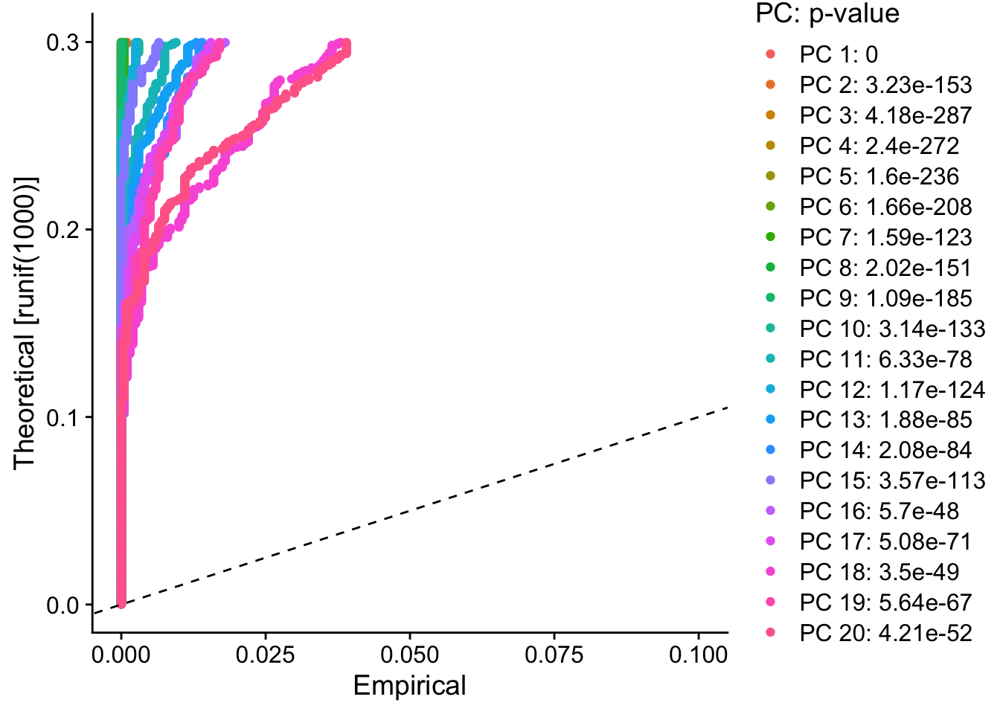
ElbowPlot(counts_st)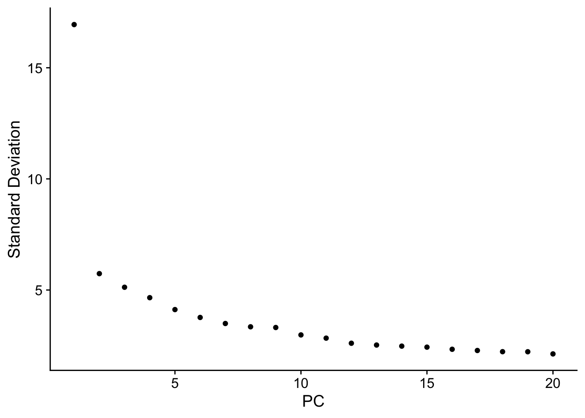
res<-0.5
sel.dims<-1010 dimensions are used to establish the number of clusters with a resolution of 0.5
counts_st <-FindNeighbors(counts_st,
reduction = "pca",
verbose = F,
dims = 1:sel.dims)Next we run the FindClusters to identify clusters of cells using a resolution of 0.5.
counts_st <-
FindClusters(
object = counts_st,
resolution = res,
verbose = 0
)t-SNE dimensionality reduction on is run on the identified variable features.
counts_st <- RunTSNE(counts_st, dims = 1:sel.dims)DimPlot(
counts_st,
reduction = "tsne",
label = T,
size = 0.5,
repel = T
)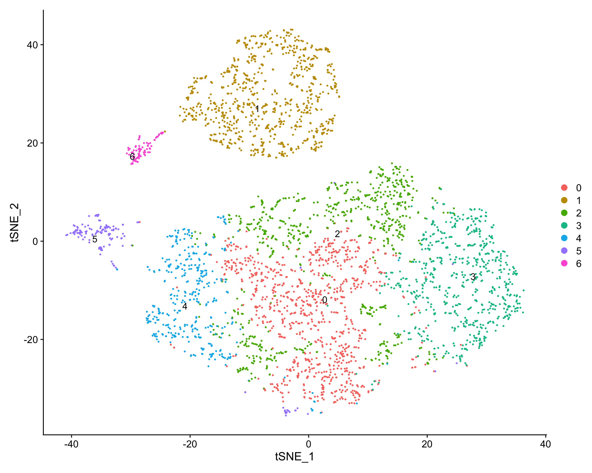
DimPlot(
counts_st,
reduction = "tsne",
label = T,
group.by = "Sample",
size = 0.5,
repel = T
)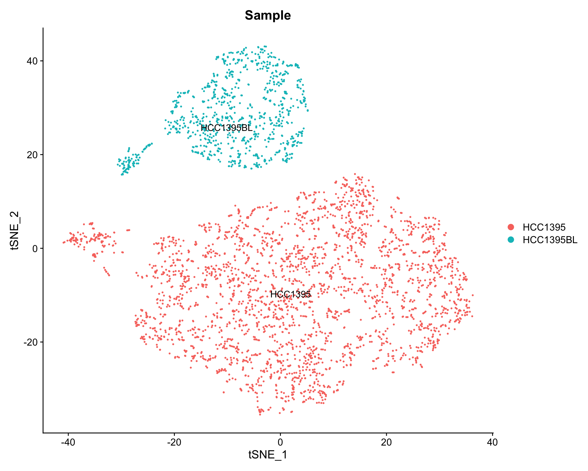
Optionally, we can also perform dimension reductionality reduction using UMAP
counts_st <- RunUMAP(counts_st, dims = 1:sel.dims,verbose = F)## Warning: The default method for RunUMAP has changed from calling Python UMAP via reticulate to the R-native UWOT using the cosine metric
## To use Python UMAP via reticulate, set umap.method to 'umap-learn' and metric to 'correlation'
## This message will be shown once per sessionDimPlot(
counts_st,
reduction = "umap",
label = T,
size = 0.5,
repel = T
)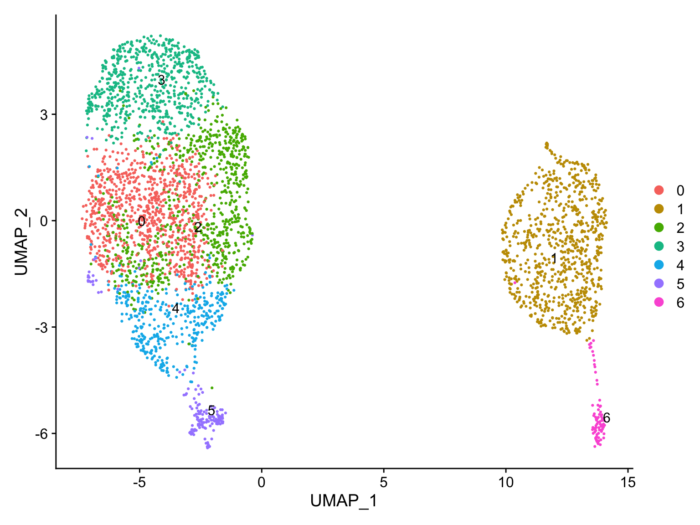
DimPlot(
counts_st,
reduction = "umap",
label = T,
group.by = "Sample",
size = 0.5,
repel = T
)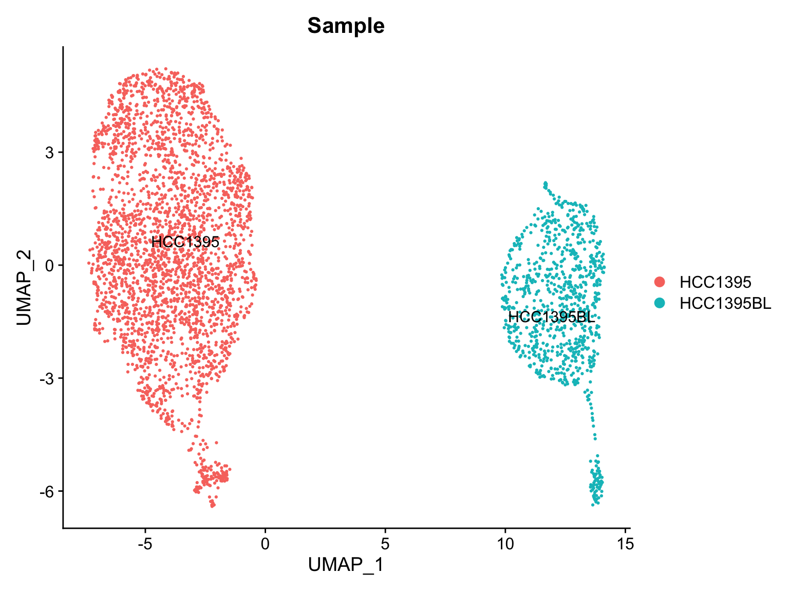 ## Differential expression analysis between clusters
To identify differentially expressed genes between clusters we can use the FindMarker function in Seurat. As an example, DE genes between clusters 0 and 1 are computed below.
DE.cluster0_1 <- FindMarkers(counts_st,
ident.1 = 0,
ident.2 = 1,
verbose = F)
head(DE.cluster0_1[order(abs(DE.cluster0_1$avg_log2FC), decreasing = T), ])## p_val avg_log2FC pct.1 pct.2 p_val_adj
## CD74 0.000000e+00 -5.891077 0.008 1.000 0.000000e+00
## IGHM 0.000000e+00 -5.729445 0.000 0.998 0.000000e+00
## S100A6 3.200845e-306 5.592588 1.000 0.047 5.669336e-302
## TMSB4X 2.191709e-273 -4.934792 0.969 1.000 3.881954e-269
## CCL3 5.926187e-299 -4.861986 0.000 0.945 1.049646e-294
## KRT81 1.055291e-293 4.609987 0.964 0.000 1.869131e-289Marker genes which can be used to uniquely identify each of the clusters are identified using the FindAllMarkers function.
all.markers<-FindAllMarkers(counts_st,verbose = F)library(dplyr)
all.markers %>%
group_by(cluster) %>%
slice_max(n = 5, order_by = avg_log2FC)## # A tibble: 35 × 7
## # Groups: cluster [7]
## p_val avg_log2FC pct.1 pct.2 p_val_adj cluster gene
## <dbl> <dbl> <dbl> <dbl> <dbl> <fct> <chr>
## 1 1.61e-155 1.23 0.94 0.525 2.86e-151 0 IGFBP3
## 2 4.07e- 65 1.17 0.417 0.149 7.21e- 61 0 IGFBP5
## 3 2.12e-147 1.06 0.998 0.714 3.75e-143 0 TPM1
## 4 2.31e-202 0.938 0.994 0.869 4.09e-198 0 CSNK2B
## 5 1.78e-131 0.901 0.998 0.665 3.15e-127 0 TPM2
## 6 0 4.79 0.998 0.021 0 1 IGHM
## 7 0 4.63 1 0.037 0 1 CD74
## 8 0 4.22 0.945 0.015 0 1 CCL3
## 9 0 4.08 1 0.959 0 1 TMSB4X
## 10 0 3.48 0.999 0.033 0 1 HLA-DRA
## # … with 25 more rowstop10.markers<-all.markers %>%
group_by(cluster) %>%
slice_max(n = 10, order_by = avg_log2FC)DoHeatmap(counts_st, features = top10.markers$gene)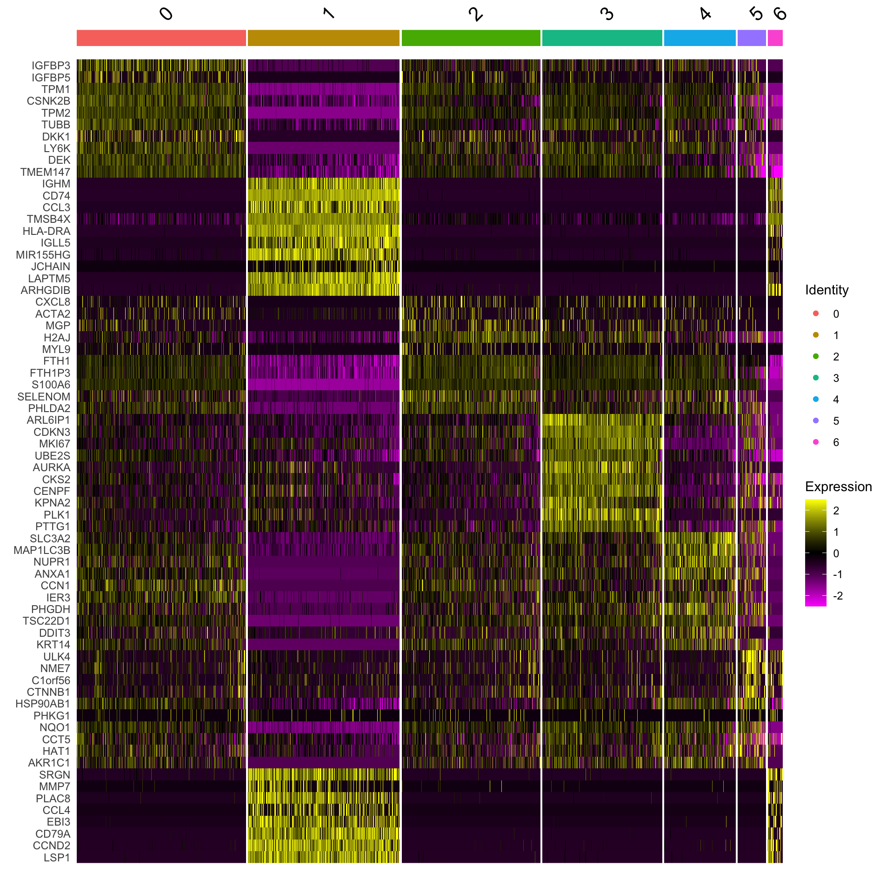
6.6 Cell annotation
An unbiased cell type recognition is performed using SingleR. celldex has a range of annotations derived from Bulk RNA-seq data that can be used to annotate the identified clusters above. Here, we use the Human Primary Cell Atlas database as an example.
library(SingleR)## Warning: package 'MatrixGenerics' was built under R version 4.1.1## Warning: package 'GenomeInfoDb' was built under R version 4.1.1library(SingleCellExperiment)
cell.sce<- as.SingleCellExperiment(counts_st)
annot<-celldex::HumanPrimaryCellAtlasData()
cell.annots <- SingleR(
test = cell.sce,
ref = annot,
labels = annot$label.main)
cell.annots.fine<-SingleR(
test = cell.sce,
ref = annot,
labels = annot$label.fine)counts_st <-
AddMetaData(counts_st, cell.annots[rownames(counts_st@meta.data), "labels"], "Annot.main")DimPlot(
counts_st,
reduction = "tsne",
group.by = "Annot.main",
label = T,
repel = T,
pt.size = 0.1,
)## Warning: ggrepel: 5 unlabeled data points (too many overlaps). Consider
## increasing max.overlaps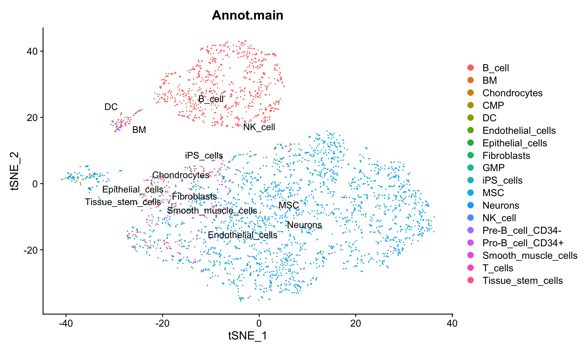
counts_st <-AddMetaData(counts_st, cell.annots[
rownames(counts_st@meta.data), "labels"], "Annot.fine")DimPlot(
counts_st,
reduction = "tsne",
group.by = "Annot.fine",
label = T,
repel = T,
pt.size = 0.1)## Warning: ggrepel: 5 unlabeled data points (too many overlaps). Consider
## increasing max.overlaps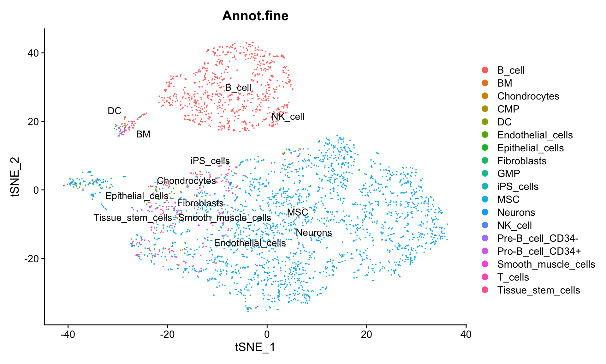
6.7 Trajectory analysis
Pseudotime analysis of the tuft cells identified in the dataset was performed using Monocle2.
mono2.learn.traject <-
function(X_counts,
these.cell.types) {
library(monocle) # It has to be Monocle 2.
rds.fname <-"Trajectory-cds.rds"
gsndf <- data.frame(gene_short_name = rownames(X_counts))
csndf <- data.frame(cell.type = these.cell.types)
rownames(gsndf) <- rownames(X_counts)
rownames(csndf) <- colnames(X_counts)
pd <- new("AnnotatedDataFrame", data = csndf)
fd <- new("AnnotatedDataFrame", data = gsndf)
cds <-
newCellDataSet(
X_counts,
phenoData = pd,
featureData = fd,
expressionFamily = negbinomial.size()
)
cds <- estimateSizeFactors(cds)
cds <- estimateDispersions(cds)
cds <- detectGenes(cds, min_expr = 0.1)
disp_table <- dispersionTable(cds)
ordering_genes <- subset(disp_table, mean_expression >= 0.1)
cds <- setOrderingFilter(cds, ordering_genes)
cds <- reduceDimension(cds)
saveRDS(cds , rds.fname)
}mono2.learn.traject(
X_counts = as.matrix(counts_st@assays$RNA@counts),
these.cell.types = counts_st[[]]$seurat_clusters)mono.rds <-readRDS("Trajectory-cds.rds")
mono.Tree <- t(mono.rds@reducedDimS)do.Traj.lines <- function(traj) {
for (i in 1:length(traj@minSpanningTree[[]])) {
p1no <- unlist(traj@minSpanningTree[[i]])[1]
p2no <- unlist(traj@minSpanningTree[[i]])[2]
lines(
c(traj@reducedDimK[1, p1no],
traj@reducedDimK[1, p2no]),
c(traj@reducedDimK[2, p1no],
traj@reducedDimK[2, p2no]),
lwd = 2
)
}
}clusters <- counts_st[[]]$seurat_clusters
cols.traj <- c("red", "green", "blue","orange","purple","pink")
traj.cols <- cols.traj[clusters]
plot(
mono.Tree,
cex = 0.7,
pch = 16,
bg = traj.cols,
col = traj.cols,
xlab = "Component 1",
ylab = "Component 2",
cex.axis = 0.8,
cex.lab = 0.9
)
do.Traj.lines(mono.rds)
legend(
"bottomright",
legend = levels(clusters),
pch = 16,
col = cols.traj,
bty = "n"
)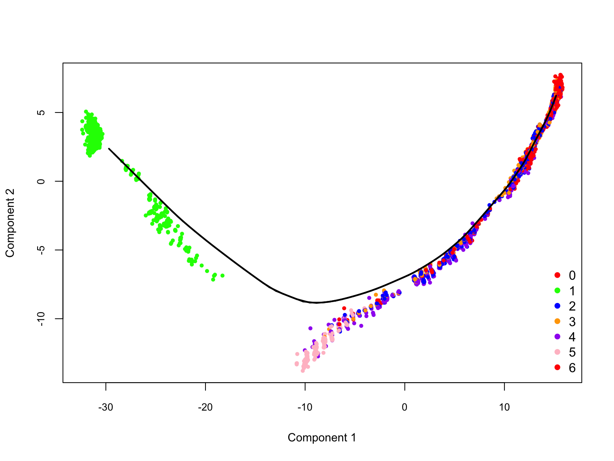
sessionInfo()## R version 4.1.0 (2021-05-18)
## Platform: x86_64-apple-darwin17.0 (64-bit)
## Running under: macOS Big Sur 10.16
##
## Matrix products: default
## BLAS: /Library/Frameworks/R.framework/Versions/4.1/Resources/lib/libRblas.dylib
## LAPACK: /Library/Frameworks/R.framework/Versions/4.1/Resources/lib/libRlapack.dylib
##
## locale:
## [1] en_AU.UTF-8/en_AU.UTF-8/en_AU.UTF-8/C/en_AU.UTF-8/en_AU.UTF-8
##
## attached base packages:
## [1] parallel stats4 stats graphics grDevices utils datasets
## [8] methods base
##
## other attached packages:
## [1] SingleR_1.6.1 SummarizedExperiment_1.22.0
## [3] GenomicRanges_1.44.0 GenomeInfoDb_1.28.4
## [5] MatrixGenerics_1.4.3 matrixStats_0.60.1
## [7] dplyr_1.0.7 org.Hs.eg.db_3.13.0
## [9] AnnotationDbi_1.54.1 IRanges_2.26.0
## [11] S4Vectors_0.30.0 Biobase_2.52.0
## [13] BiocGenerics_0.38.0 SeuratObject_4.0.2
## [15] Seurat_4.0.4 Rsubread_2.6.4
##
## loaded via a namespace (and not attached):
## [1] VGAM_1.1-5 plyr_1.8.6
## [3] igraph_1.2.6 lazyeval_0.2.2
## [5] splines_4.1.0 densityClust_0.3
## [7] BiocParallel_1.26.2 listenv_0.8.0
## [9] scattermore_0.7 fastICA_1.2-2
## [11] ggplot2_3.3.5 digest_0.6.27
## [13] htmltools_0.5.2 viridis_0.6.1
## [15] fansi_0.5.0 magrittr_2.0.1
## [17] memoise_2.0.0 ScaledMatrix_1.0.0
## [19] tensor_1.5 cluster_2.1.2
## [21] ROCR_1.0-11 limma_3.48.3
## [23] globals_0.14.0 Biostrings_2.60.2
## [25] docopt_0.7.1 spatstat.sparse_2.0-0
## [27] colorspace_2.0-2 blob_1.2.2
## [29] ggrepel_0.9.1 xfun_0.25
## [31] sparsesvd_0.2 crayon_1.4.1
## [33] RCurl_1.98-1.4 jsonlite_1.7.2
## [35] spatstat.data_2.1-0 survival_3.2-13
## [37] zoo_1.8-9 glue_1.4.2
## [39] polyclip_1.10-0 gtable_0.3.0
## [41] zlibbioc_1.38.0 XVector_0.32.0
## [43] leiden_0.3.9 DelayedArray_0.18.0
## [45] BiocSingular_1.8.1 future.apply_1.8.1
## [47] abind_1.4-5 scales_1.1.1
## [49] pheatmap_1.0.12 DBI_1.1.1
## [51] miniUI_0.1.1.1 Rcpp_1.0.7
## [53] viridisLite_0.4.0 xtable_1.8-4
## [55] reticulate_1.20 spatstat.core_2.3-0
## [57] rsvd_1.0.5 bit_4.0.4
## [59] htmlwidgets_1.5.4 httr_1.4.2
## [61] FNN_1.1.3 RColorBrewer_1.1-2
## [63] ellipsis_0.3.2 ica_1.0-2
## [65] farver_2.1.0 pkgconfig_2.0.3
## [67] sass_0.4.0 uwot_0.1.10
## [69] deldir_0.2-10 utf8_1.2.2
## [71] labeling_0.4.2 tidyselect_1.1.1
## [73] rlang_0.4.11 reshape2_1.4.4
## [75] later_1.3.0 munsell_0.5.0
## [77] tools_4.1.0 cachem_1.0.6
## [79] cli_3.0.1 generics_0.1.0
## [81] RSQLite_2.2.8 ggridges_0.5.3
## [83] evaluate_0.14 stringr_1.4.0
## [85] fastmap_1.1.0 yaml_2.2.1
## [87] goftest_1.2-2 knitr_1.34
## [89] bit64_4.0.5 fitdistrplus_1.1-5
## [91] DDRTree_0.1.5 purrr_0.3.4
## [93] RANN_2.6.1 KEGGREST_1.32.0
## [95] sparseMatrixStats_1.4.2 pbapply_1.4-3
## [97] future_1.22.1 nlme_3.1-152
## [99] mime_0.11 slam_0.1-48
## [101] monocle_2.20.0 compiler_4.1.0
## [103] rstudioapi_0.13 plotly_4.9.4.1
## [105] png_0.1-7 spatstat.utils_2.2-0
## [107] tibble_3.1.4 bslib_0.3.0
## [109] stringi_1.7.4 highr_0.9
## [111] RSpectra_0.16-0 lattice_0.20-44
## [113] Matrix_1.3-4 HSMMSingleCell_1.12.0
## [115] vctrs_0.3.8 pillar_1.6.2
## [117] lifecycle_1.0.0 combinat_0.0-8
## [119] spatstat.geom_2.2-2 lmtest_0.9-38
## [121] jquerylib_0.1.4 BiocNeighbors_1.10.0
## [123] RcppAnnoy_0.0.19 data.table_1.14.0
## [125] cowplot_1.1.1 bitops_1.0-7
## [127] irlba_2.3.3 httpuv_1.6.3
## [129] patchwork_1.1.1 R6_2.5.1
## [131] bookdown_0.24 promises_1.2.0.1
## [133] KernSmooth_2.23-20 gridExtra_2.3
## [135] parallelly_1.28.1 codetools_0.2-18
## [137] MASS_7.3-54 assertthat_0.2.1
## [139] withr_2.4.2 qlcMatrix_0.9.7
## [141] sctransform_0.3.2 GenomeInfoDbData_1.2.6
## [143] mgcv_1.8-36 beachmat_2.8.1
## [145] grid_4.1.0 rpart_4.1-15
## [147] tidyr_1.1.3 DelayedMatrixStats_1.14.3
## [149] rmarkdown_2.10 Rtsne_0.15
## [151] shiny_1.6.0